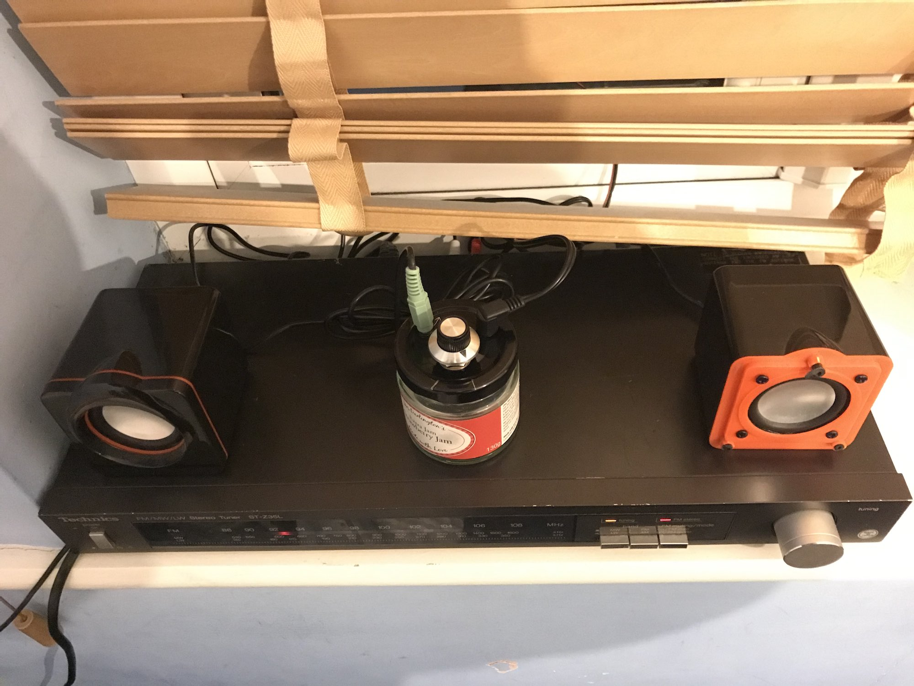
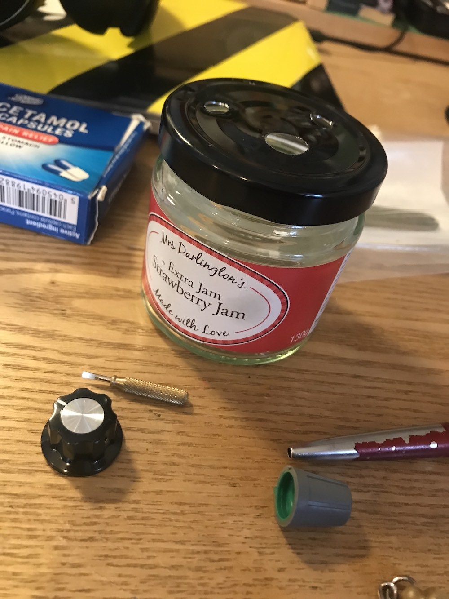
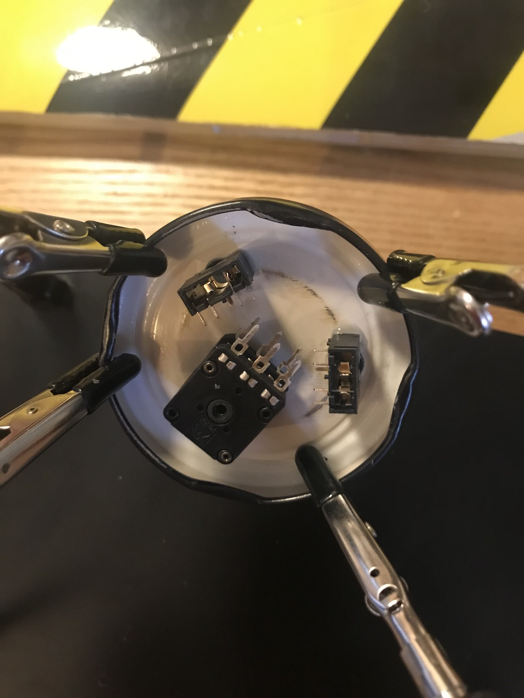
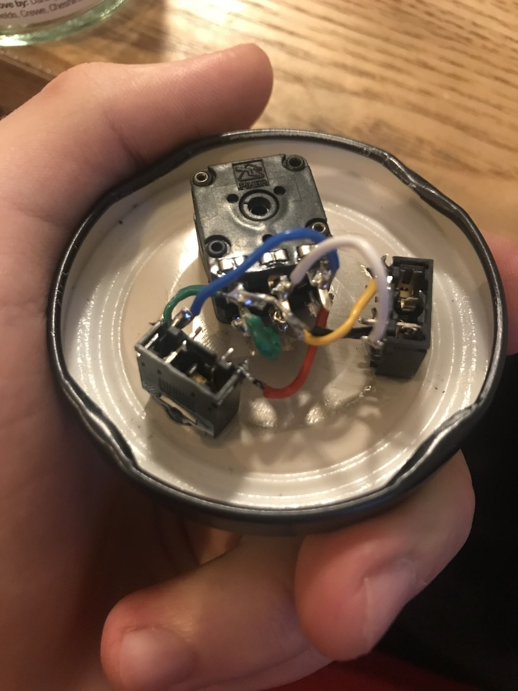
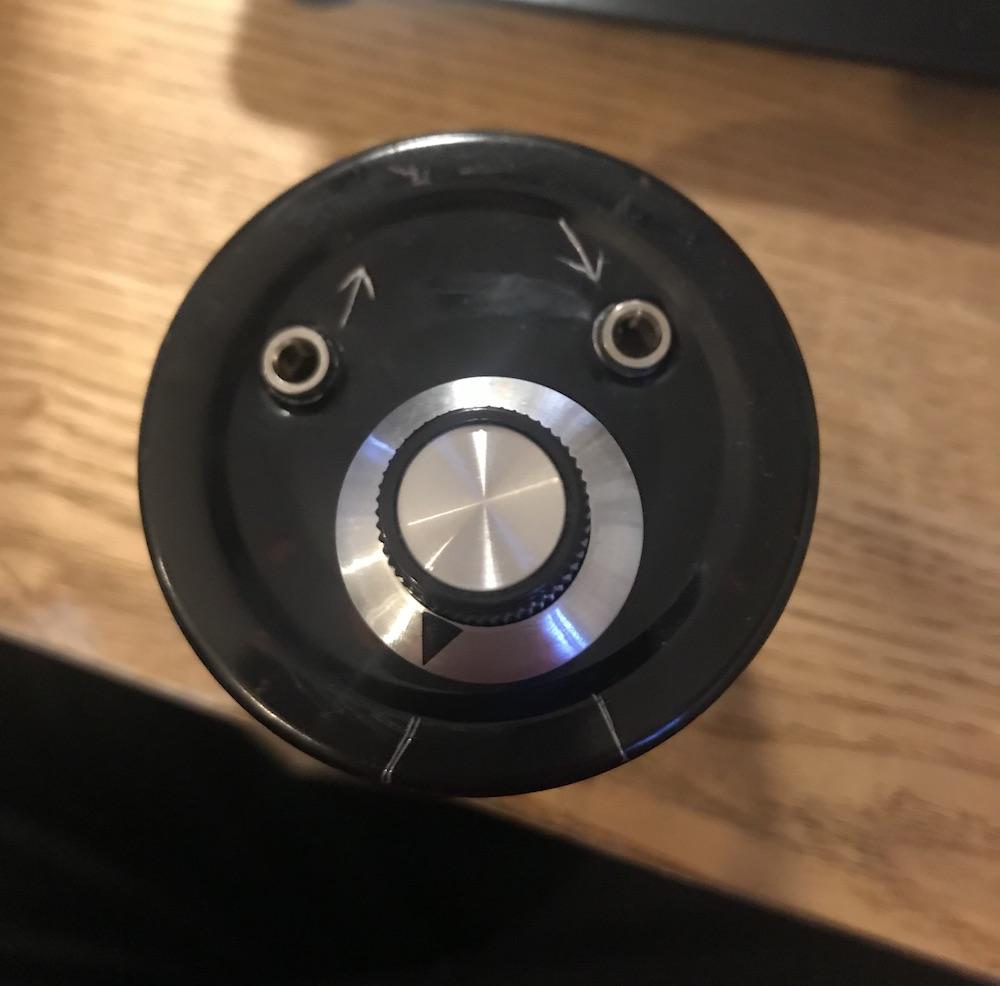

A female-to-female 3.5mm audio cable connector with a volume knob, built for a very specific purpose
I got an old FM/AM radio a few years ago, meant to be part of a hi-fi setup. It has RCA audio output with no level controls, meaning that connecting headphones to it results in me burning my ears off from the sheer volume. The idea therefore is to find a way of inserting a volume control into the signal path, so that I may drift off nicely to sleep with quiet radio in the background, rather than with the rest of the family demanding that I turn the damn thing down.
The initial design was a pair of 3.5mm headphone sockets connected via resistors on a breadboard. Good for quiet, bad for loud and terrible at staying in one piece when under any mechanical stress from, for example, the movement of the attached headphone cable.
The evolution of this idea was to replace the fixed resistors with a stereo log pot and replace the breadboard with a soldered circuit and an enclosure. As I have only basic fabrication skills and a liking for the re-use of existing products and materials, I chose for my enclosure a small jam jar. Holes drilled into the lid allow the placement of the through-mount potentiometer, and the 3.5mm audio sockets poke through and hold in place well enough with a couple of dabs of superglue.
The stereo log pot I got from RapidOnline had a very long plastic spindle, which I cut down to size using the well-accepted and much-lauded method of heating a Stanley knife blade with a lighter and then melting straight through the bugger. Breath was held and safety squints engaged through all of this, of course.
The soldering was a task. I'm not a particularly frequent solderer, and my single available soldering iron tip is quite chunky. Nevertheless, I managed to get everything connected up quite well, and on the first try too! Genuinely pretty proud of myself for that one.
I don't know if it makes any difference which jack is the input and which one's the output- it is after all only a resistor that the signal's going through. I thought I'd mark them out anyway, as well as the travel limits of the pot. In a quirk of the pot I got, the 'raise the volume' direction of rotation actually lowers the volume. A bit weird, but should be easy enough to remember after a few mistakes.
This is the smallest least obviously functional thing I've made so far. It feels like junk that you'd find in the back of a cupboard in an old workshop, or in some car boot or charity shop. Hence the official designation of 'doohickey'. A very useful doohickey though.